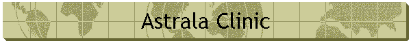
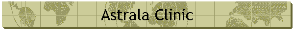

A website that is committed to improving society through helping the children of the world.

A website that is committed to improving society through helping the children of the world.
Our aim is to help the people of Pakistan so that they
may become self-reliant members of society. We plan to accomplish this goal
through:
Ø
Offering clinics, so that the children and senior citizens
of Pakistan can prosper as healthy individuals.
Ø
Offering the financial means for children to gain an
education so that they can become productive members of society.
Ø
Maintaining a volunteer staff and by using all donations to
pursue the best interest of the people of Pakistan.
Ø
Offering proper shelter to the aging and growing senior
population of Pakistan.
Ø
Offering help regardless of religion, race,
ethnicity, sex or gender without influencing the local culture or
traditions.
Meeting these goals depends on the generosity of those who are willing to make a difference and offer an opportunity to those who are in need.
1.
To bring together the people of our society in a common bond to
help those who are in need.
2.
Enable the Children of Pakistan to grow a long healthy life.
3.
To give the children of Pakistan the tools to grow, create a
future, and become productive members of society.
4.
To facilitate economic development through education and guidance
so that Astrala Clinic can become self supportive.
5.
To enable economic and medical development in the lives of the
children and their families.
6. To assist the elderly with shelter, food, medical treatment, and a place to make their lives peaceful.

The Astrala clinic is a member of the Stuart C. Dodd Institute. The SCDI is an Institute that is founded on the principles of Social Innovation. For more information or further clarification please visit their website.

For more information about the Astrala Clinic please contact either Dr. Kirby of Matt Driscoll. You may also call or mail the Stuart C. Dodd Institute directly at the information posted below.
|
Send mail to azamchaudri@gmail.com with
questions or comments about this web site. |